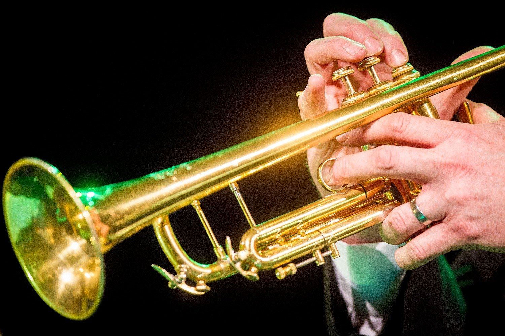

Trumpets are a loud instrument. One of the loudest you will hear inside a orchestra. A trumpet is a Bb instrument and contains 3 valves. Usually it will play the first voice of a piece, but can also play the alto. It has 3 valves and is a oral instrument. It is made of Brass like the rest of the instruments here.
